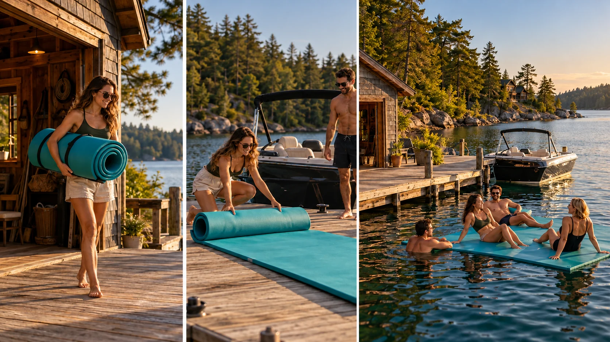

F08 · 중급 · FPV
여름 호숫가의 하루
같은 제품의 운반·설치·사용을 연결하며 광고가 보여줄 효용을 행동으로 바꾸어 표현한다.
그림에서 확인할 세 가지제품이 쓰이는 맥락을 보여준다
1매트를 옮기는 사람
첫 화면의 청록색 매트와 운반 동작을 본다. 제품의 출발 상태를 알아두면 다음 화면에서 무엇이 달라졌는지 쉽게 비교할 수 있다.
2물 위로 펼치는 과정
가운데 화면은 매트의 모양과 면적이 달라지는 순간이다. 같은 색의 제품이 어떤 준비를 거쳐 사용 가능해지는지 행동으로 읽는다.
3사용하는 사람과 환경
마지막 화면에서는 제품 위의 사람과 주변 물을 함께 본다. 매트의 존재보다 호숫가에서 제공하는 경험이 장면의 결론이 된다.
촬영 설계
촬영을 이렇게 설계한다
사용 전의 행동을 잡는다
학습 장면에서는 매트를 운반하는 행동으로 제품을 소개한다. 포장을 크게 보여주는 대신 누가 어떤 상황에서 꺼내는지를 담아 뒤에 나올 설치와 사용의 이유를 먼저 만든다.
상태 변화를 연결한다
접힌 매트와 펼친 매트가 같은 물건임을 색과 형태로 알아보게 한다. 단계 사이에서 제품의 정체성이 사라지면 이동 방향을 맞추는 것만으로 사용 과정이 연결되지는 않는다.
효용을 마지막에 남긴다
마지막 장면은 제품 자체보다 이용자가 어떻게 활용하는지 보여준다. 학습안에서는 사람과 제품이 함께 읽히는 크기를 선택하고 주변 풍경이 제품의 역할을 가리지 않는지 비교한다.
MISSION은 JayByrd Films와 만든 여름 호숫가 원테이크의 완성본과 제작 비하인드를 함께 소개했다.
원본 영상MISSION
1. 같은 제품의 흔적
제품이 다른 공간이나 사용 단계로 넘어갈 때 식별 단서가 남는지 본다. 형태가 바뀌어도 같은 제품임을 알아야 과정이 이어진다.
2. 설치가 주는 정보
제품을 준비하거나 사용하는 행동이 크기와 기능을 얼마나 설명하는지 본다. 풍경과 제품을 배치한 것만으로 전달되지 않는 정보가 있다.
3. 사용의 결과
마지막에 사람이 제품과 어떤 관계를 맺는지 본다. 제품을 멋지게 배치한 것과 그 효용이 보이는 것을 구별한다.
재생이 제한되면 원본 영상 새 창을 이용하세요.
공식 소개 · 한국어 요약
공식 소개와 촬영 설계의 확인 범위를 나눈다
공식 소개
메타데이터 요약: MISSION의 자체 게시물은 JayByrd Films와 여름 호숫가의 하루를 담는 원테이크를 제작했다고 소개하며 BTS와 최종 영상을 연결한다.
미공개 정보
본문에는 구체적인 경로·출연 큐·카메라 설정의 설명이 없다.
학습안 범위
이 교안의 운반·설치·사용 순서는 제품 활용을 분석하기 위한 학습안이며 제작진의 실제 촬영 순서로 단정하지 않는다.
Kling 프롬프트단문 인과 체인 · 16:9
내가 직접 만들어 본다
운반·설치·사용의 행동 순서가 같은 제품의 상태 변화로 이어져 효용이 마지막에 남는 인과를 지시한다.
- S01여름 호숫가 선착장에서 사람이 접힌 매트를 든다.
- S02영상은 하나의 연속 쇼트다.
- S03처음 10초 동안 드론은 매트를 든 사람을 따라간다.
- S04사람이 매트를 물가로 운반한다.
- S05매트는 접힌 채 하나의 같은 색으로 보인다.
- S06다음 10초 동안 사람이 매트를 물 위에 던져 편다.
- S07매트가 펼쳐지자 면적이 눈에 띄게 커진다.
- S08펼쳐진 매트는 접혀 있던 그 물건으로 알아볼 수 있다.
- S09마지막 10초 동안 사람이 매트 위에 눕는다.
- S10사람이 눕자 매트가 물 위에서 몸을 받친다.
- S11드론은 사람과 매트가 함께 읽히는 크기로 멈춘다.
- S12호수 풍경은 매트를 가리지 않는다.
[네거티브]
- 매트 대신 다른 물건이 등장하거나 사람이 빈손인 것 금지
- 컷 전환으로 장면이 낮과 밤처럼 나뉘는 것 금지
- 드론이 사람을 놓치고 풍경만 비추는 것 금지
- 사람이 매트를 숨기거나 가방에 넣어 버리는 것 금지
- 매트가 포장에 가려 제품이 안 보이는 것 금지
- 매트가 펼쳐지지 못하고 접힌 채 물에 떨어지는 것 금지
- 펼쳐져도 면적이 그대로여서 변화가 모호한 것 금지
- 펼쳐진 매트의 색과 모양이 접힌 때와 다르게 바뀌는 것 금지
- 사람이 매트가 아닌 물가 바닥에 눕는 것 금지
- 매트가 가라앉거나 사람이 물에 빠지는 것 금지
- 드론이 멀어져 매트와 사람이 점처럼 작아지는 것 금지
- 물결이나 풍경이 매트 위를 덮어 제품이 묻히는 것 금지
결과에서 볼 것
- 접힌 매트와 펼친 매트가 같은 물건으로 읽혔는가
- 운반에서 사용까지 행동이 순서대로 이어졌는가
- 마지막에 사람과 매트가 함께 읽혔는가